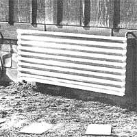
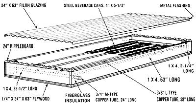

Mother's Tin Can Collector
Using Mother's Amazing Fin Press, you can build a solar collector to make a dent in the hot water needs.
By the Mother Earth News editors
May/June 1980
Back in MOTHER NO. 61 we showed you a hand-operated fin press that makes it easy to turn old tin cans into snug-fitting heat collector plates. . .and helps avoid the high material costs usually involved in constructing solar water heaters. Now it's time to put that tool to work, building . . .
Shortly after our research staff put together MOTHER's Amazing Fin Press, they set to work designing a small collector to demonstrate the recycled-can fin concept. While the ten-square-foot collector you see here isn't capable of filling all of a household's hot water needs, it will put a big dent in the gas or electricity bills you've been paying for warm water . . . and an enterprising fabricator could easily scale up the dimensions of this unit to increase its output.
Of course, the best part about the Tin Can Collector is the small amount of material needed to build it: a few pieces of lumber, some copper tubing, and a collection of steel beverage containers waiting to be recycled.
You'll need 58 cans-cut and trimmed to a 4" X 5-1/2" size, as shown on page 98 of MOTHER NO. 81-to construct a collector like the one illustrated in the drawings. Each of the future heat-grabbing plates should be set into the fin press so that the tube-fitting crease will be formed across the metal's 4" dimension. Then, when the fin is soldered to a 3/8" water carrying tube, it will extend 2-1/2 inches on each side. By placing the four pipes five inches apart-and allowing an inch of open space on each end for manifold connections-you should be able to fit 14 shaped cans on each pass of the collector.
As you fasten the cut containers to the 3/8" copper tubes, be careful to sweat plenty of solder into each joint . . . to ensure that there will be adequate contact area to provide heat transfer from the plates to the tubes. Once all the cans are in place, bore the 7/16" holes in the manifold (to accept the 3/8" copper tubing), solder the various joints, and cap the unused ends of the manifold tubes. (Here's a tip for positioning the 3/8" tubes in the manifolds: First slide a section of dowel into the large pipe, and then butt the inserted section against it.)
Once all of the metal parts have been joined, the remainder of the assembly will be only a matter of building a box around the "guts" of the collector and painting everything black. We used scrap 1 X 4 to frame the tubes-with 1" holes drilled in the side pieces for the manifold entry and exit-and connected the six boards with countersunk wood screws. To seal the underside of the unit, we simply slipped three inches of fiberglass batt beneath the piping, then closed in the box's bottom with a chunk of 1/4" plywood. (Of course, the method of insulation you use can-and should-vary according to what you can scrounge. In fact, styrofoam or Thermaxtype insulation might actually be more efficient than fiberglass.
For glazing, our research staff chose the popular corrugated fiberglass Filon material which happens to be available in a convenient 24-inch-wide size-and the covering was sealed with ripple board on the ends and aluminum flashing on the sides . . . using a liberal dose of silicon sealant.
In order to keep the cost of the project as low as possible, MOTHER's researchers decided to circulate water through the collector by natural convection. Our thermosiphon approach also allows the liquid to remain inside the tubes long enough to become thoroughly warmed. However, any individual who wants to scale the unit up-by going to a full ten-foot-long section of the Filon glazing, for example-would probably want his or her collector to be served by a pump . . . as well as automated controls, drain-down mechanisms, and other sophisticated conveniences. The device's potential is limited only by your ingenuity.
|
 Mount the completed collector horizontally. |
 Each can-covered line must be soldered into the headers. |
 |